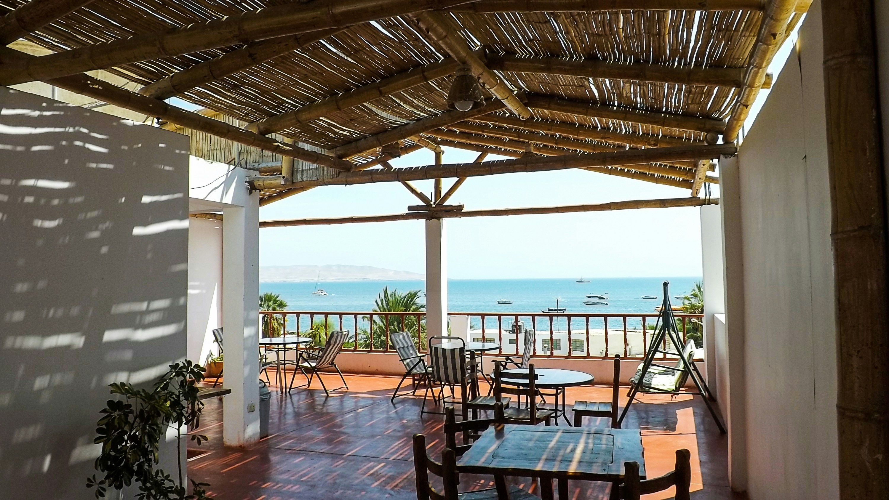
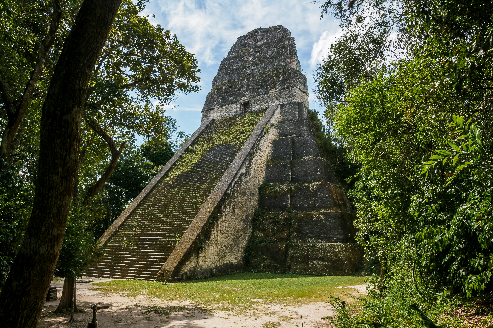

visit Lima and enjoy the trip
Lima has emerged as Latin America's culinary capital, home to several restaurants ranked among the world's best. Peruvian cuisine blends indigenous ingredients with Spanish, African, Chinese, and Japanese influences, creating unique fusion dishes. Start with ceviche, Peru's national dish of raw fish marinated in lime juice with onions, chili peppers, and cilantro - best enjoyed at traditional cevicherías for lunch when fish is freshest. Try anticuchos (grilled beef heart skewers), causa (layered potato dish), and lomo saltado (stir-fried beef).
For fine dining, restaurants like Central and Maido showcase innovative Peruvian gastronomy using ingredients from Peru's diverse ecosystems - Amazon rainforest, Andes mountains, and Pacific coast. More casual experiences await at Mercado de Surquillo where locals shop for produce, or the bohemian Barranco neighborhood filled with trendy cafes and pisco bars. Don't miss trying pisco sour, Peru's signature cocktail made from grape brandy, lime juice, egg white, and bitters. Food tours through neighborhoods like Miraflores offer tastings at multiple venues, teaching the history and evolution of Peruvian cooking. Lima's culinary scene represents Peru's cultural diversity and innovation, making it a paradise for food enthusiasts.

Miraflores district sits atop dramatic cliffs overlooking the Pacific Ocean, creating perfect conditions for paragliding year-round. Tandem flights launch from parks along the Malecón, the clifftop boardwalk, soaring over beaches, waves crashing below, and Lima's modern skyline stretching inland. The experience requires no prior training - experienced pilots control the parachute while passengers enjoy breathtaking aerial views and the thrill of flight. Flights typically last 10-15 minutes, with early morning or late afternoon offering the best light and wind conditions.
Even if you don't paraglide, the Malecón offers spectacular walking and cycling paths stretching for miles along the coast. Parks feature sculptures, gardens, and lookout points perfect for watching surfers below or romantic sunsets over the Pacific. The Love Park (Parque del Amor) displays a massive sculpture of embracing lovers surrounded by mosaic walls inscribed with romantic poems. Below the cliffs, beaches like Playa Makaha attract surfers riding Peru's consistent waves, while the waterfront Larcomar shopping center built into the cliff face offers restaurants, bars, and shops with stunning ocean views. The area transforms in summer (December-March) when beaches fill with locals enjoying warm weather.

Lima contains remarkable archaeological sites where ancient civilizations thrived centuries before the Incas and Spanish conquest. Huaca Pucllana, a massive adobe pyramid in the heart of Miraflores, dates to 500 AD when the Lima Culture built this ceremonial and administrative center. The pyramid rises seven levels, constructed entirely from handmade adobe bricks arranged in a bookshelf pattern. Guided tours (required) explain the site's religious significance, burial practices, and ongoing excavations revealing textiles, ceramics, and mummies.
The site includes an on-site restaurant serving traditional Peruvian cuisine with pyramid views illuminated at night, creating a surreal dining experience surrounded by ancient history within a modern neighborhood. The larger Pachacamac ruins south of Lima showcase a vast religious complex where pilgrims traveled from across the Andes to worship. The site includes temples, plazas, and residential areas with stunning Pacific views. The Larco Museum in Pueblo Libre houses Peru's finest pre-Columbian art collection, including thousands of ceramics depicting daily life, deities, and explicit erotic pottery. These sites reveal Lima's layered history - indigenous civilizations, Spanish colonial influence visible in the Historic Center's baroque churches and mansions, and modern metropolitan development.